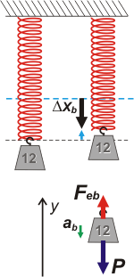

|
NO ME SALEN
PROBLEMAS RESUELTOS DE FÍSICA DEL CBC
(Fuerzas elásticas) |
|

|
 |
2.25- Un resorte de masa despreciable, cuya
longitud es 40 cm cuando está descargado, tiene
un extremo unido al techo a 2,4 m del piso, y en
el otro está colgado un objeto que pesa 12 kgf. |
|
| |
a- Hallar la constante elástica del resorte, si al
quedar en equilibrio su longitud es 60 cm.
b- Se eleva al cuerpo 5 cm desde la posición
de equilibrio, y se lo suelta. Hallar con qué aceleración
parte.
c- Determinar cuánto habría que desplazar el
cuerpo hacia abajo, respecto de su posición de
equilibrio, para que al soltarlo partiera con una
aceleración de módulo igual a |g|.
d- Trazar los gráficos de la aceleración del cuerpo
y de la fuerza que experimenta el techo, en
función de la distancia al piso del extremo libre. |
|
| Se trata de un problema bien sencillo de aplicación directa de la ley de Hoock. El primer esquema que hice nos va a resultar de mucha utilidad: |
|
|
 |
Acá tenés -a la izquierda- el techo y el resorte colgando. Importa poco o nada en este ejercicio la longitud del resorte, pero lo dibujé para indicarte la posición de la última espira del resorte. Ahí tracé una línea punteada en celeste, que es importantísima, porque desde ahí hay que medir los estiramientos o compresiones.
A la derecha figura el mismo resorte, pero estirado porque le colgamos una pesa de 12 kgf, 120 N. Como se trata del estiramiento relatado en el ítem a- lo llamé Δxa, que vale 20 cm (la diferencia entre 60 cm de longitud total menos 40 cm de longitud natural).
Como en varias partes el enunciado se refiere ese estiramiento como "posición de equilibrio" la marqué con una línea punteada negra. Abajo aparece el DCL para esa situación. Sólo hay dos fuerzas actuando sobre la pesa: su peso de 120 N y la fuerza elástica... que también debe valer 120 N, ya que el cuerpo está en equilibrio. Las ecuaciones lo dirían de este modo:
Fea — P = 0 → Fea = P
|
|
|
Por otro lado, la Ley de Hooke nos dice que:
Fea = k . Δxa
de donde
k = Fea / Δxa
k = 120 N / 0,2 m
|
|
|
|
| Ahora conocemos el valor de la constante elástica del resorte y podemos encarar las restantes preguntas. |
|
|  |
En el ítem b- nos cuentan que elevan la pesa 5 cm desde la posición de equilibrio (punteada negra) y desde ahí lo sueltan. Queda claro que al elevar la pesa se achica el estiramiento. Antes era de 20 cm, y ahora de 15 cm.
Al achicarse el estiramiento también se achica la fuerza elástica (que acá llamaré Feb, que es una forma de llamarla más linda que Fea; es un chiste, no te enojes).
Feb = k . Δxb = 600 N/m . 0,15 m
Feb = 90 N
La seguanda Ley de Newton nos dice que al soltarlo, saldrá con una aceleración ab...
Feb — P = m . ab
ab = Feb — P / m
ab = 90 N — 120 N / 12 kg
|
|
|
| |
|
| Para responder la siguiente pregunta tenés que operar casi del mismo modo que la anterior. |
|
 |
En el ítem c- nos cuentan que bajan la pesa hasta cierto nivel en el que al soltarla su aceleración es igual a la aceleración de la gravedad, pero hacia arriba. Lógicamente, con ese nuevo estiramiento -que llamaré Δxc- la fuerza elástica, Fec, tendrá otro valor. El nuevo DCL aclara un poco los tantos.
Fec — P = m . ac
Fec — P = m . g
Fec — m . g = m . g
Fec = 2 . m . g
Fec = 240 N
Hooke nos da el valor del estiramiento
Fec = k . Δxc
Δxc= Fec / k
Δxc= 240 N / 600 N/m = 0,4 m
|
|
|
El enunciado, caprichosamente, nos pide el estiramiento adicional desde la posición de equilibrio (punteada negra) de modo que el resultado se obtiene restando el estiramiento para el equilibrio. |
|
|
|
| |
 |
| |
| DESAFIO: Hacé vos el gráfico, ¿dale? |
|
| |
|
| Algunos derechos reservados.
Se permite su reproducción citando la fuente. Última actualización jun-08. Buenos Aires, Argentina. |
|
|
|